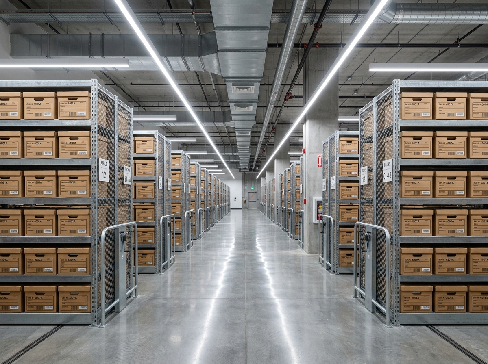
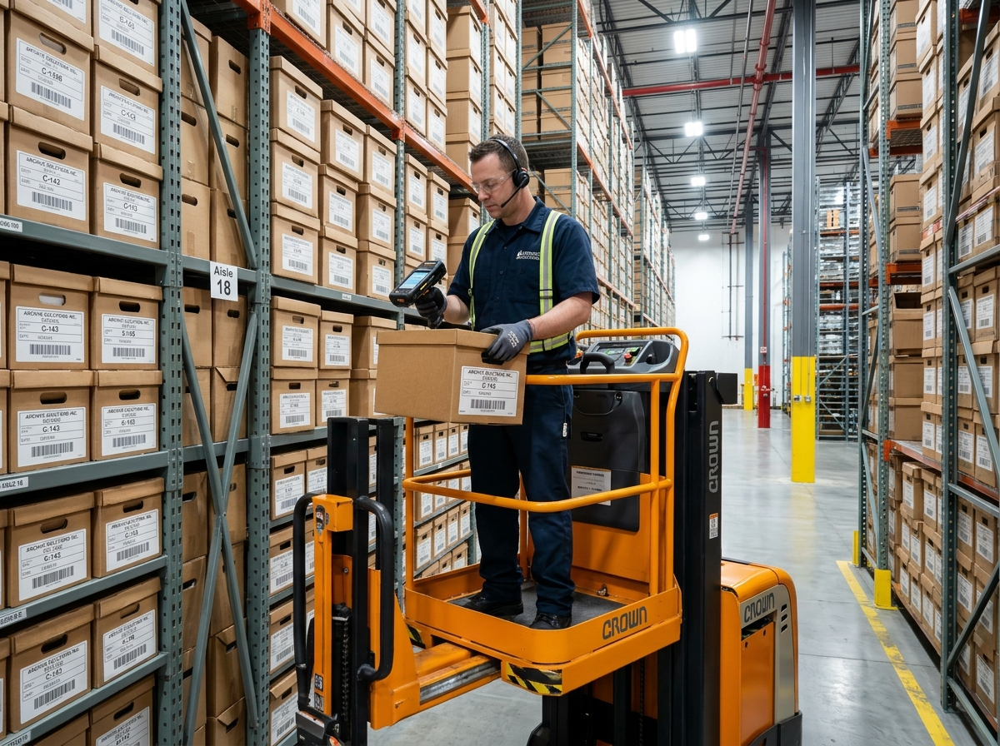
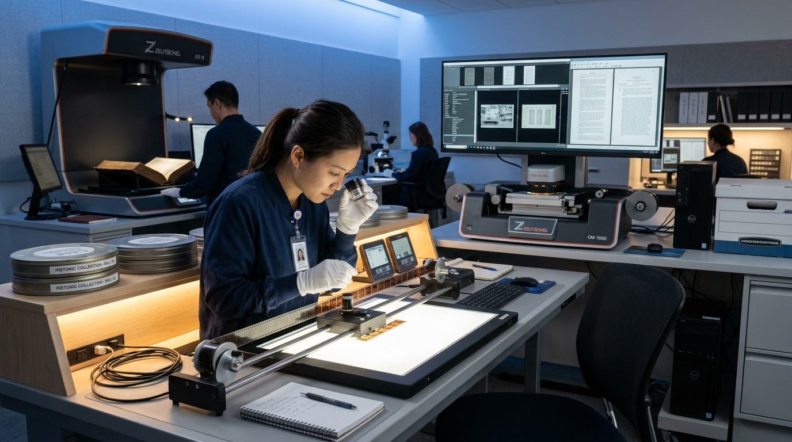
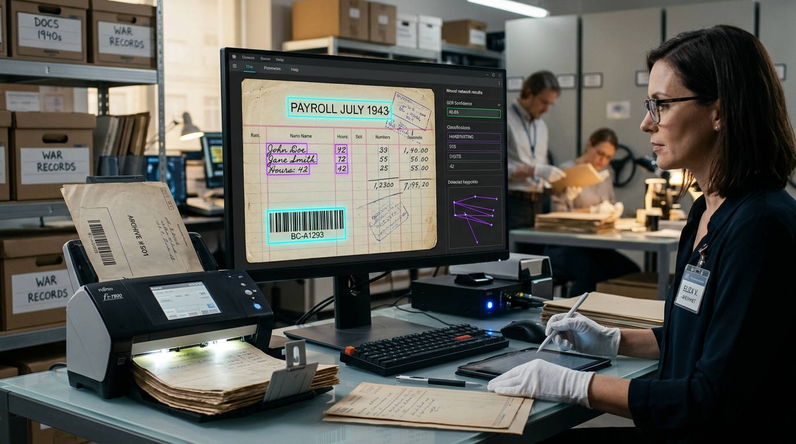
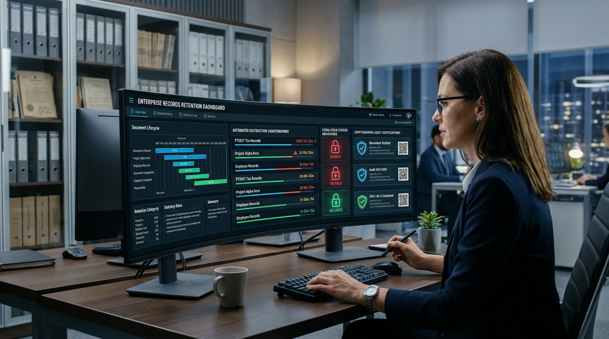

Our Services
End-to-end records management solutions designed for security, compliance, and efficiency.
Comprehensive Records Solutions
From physical storage to digital transformation, we manage the complete lifecycle of your business records.
Physical Records Storage
Secure, climate-controlled facilities with 24/7 monitoring, fire suppression, and biometric access for your most critical documents.
Document Retrieval
Rapid retrieval with same-day and emergency 2-hour options. Receive physical files or digital scans through our secure portal.
Digital Scanning & OCR
High-speed document digitization with full OCR capability, making your paper archives fully searchable and accessible online.

Engineered for Absolute Document Preservation
Our subterranean and industrial-grade facilities are constructed with reinforced steel envelopes, zoned gaseous fire defense, and strict dual-custodian airlocks to preserve your records for decades.
Precision Custody Tracking & Rapid File Retrieval
Never lose visibility of an urgent file. From physical carton barcoding to tamper-evident courier dispatch and rapid digital scanning, every handover is logged in real-time.

Enterprise Document Scanning & Digital Transformation
Convert rooms of legacy paper files into searchable, cloud-connected digital assets. Our production bureaus combine planetary optical capture, high-speed rotary scanners, and deep OCR pipelines with 99.8% forensic indexing accuracy.

High-Velocity Production Scanning
Ultrasonic double-feed detection with automated deskewing, background suppression, and color dropout for high-speed carton digitization.
Microfilm, Fiche & Rare Media Scanning
Specialized optical transport mechanisms digitizing 16mm/35mm roll film, microfiche jackets, aperture cards, and blueprint sheets without heat wear.
Full-Text OCR & Cloud Ingestion
Every scanned page receives full-text OCR indexing and metadata tagging, enabling instant keyword searches and ERP/SharePoint sync.
Cognitive AI Records Intelligence & Auto-Indexing
Bridge physical documents and automated digital workflows. Our multi-model neural OCR pipelines extract structured data, classify document types, and trigger automated compliance lifecycles with 99.8% precision.

Multi-Engine Optical Parsing
Detect printed text, cursive handwriting, barcode symbologies, and tabular figures across damaged, creased, or aged paper.
Automated Taxonomy Classification
Automatically categorize contracts, patient files, blueprints, tax manifests, and invoices into designated folder taxonomies.

Autonomous Retention Timers
Assign immutable regulatory destruction dates upon scanning. Get notified when document lifecycles mature for shredding.
How Our Process Works
From initial assessment to ongoing management, our streamlined onboarding gets your records secure in days.
Assessment
Free on-site evaluation of your records volume, types, and compliance requirements.
Custom Plan
Tailored storage and management plan with transparent pricing and SLA.
Secure Pickup
Our team collects your records with chain-of-custody documentation.
Portal Access
Full visibility into your inventory with on-demand retrieval, scanning, and reporting.